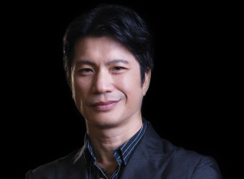

Đạo diễn điện ảnhnguyễn quang dũngĐược mệnh danh là “ông vua phòng vé phim Việt” với các bộ phim nổi tiếng như Nụ Hôn Thần Chết, Những Nụ Hôn Rực Rỡ, Mỹ Nhân Kế...Với TV L9300 trải nghiệm xem phim tại nhà đã được nâng lên tầm cao mới chất lượng hình ảnh chưa từng có trước nay. L9300 hoàn toàn làm thỏa mãn cả hai nhu cầu xem phim để giải trí và học hỏi nghiên cứu của một người làm phim chuyên nghiệp như tôi.
Đạo diễn điện ảnhnguyễn quang dũngĐược mệnh danh là “ông vua phòng vé phim Việt” với các bộ phim nổi tiếng như Nụ Hôn Thần Chết, Những Nụ Hôn Rực Rỡ, Mỹ Nhân Kế...Với TV L9300 trải nghiệm xem phim tại nhà đã được nâng lên tầm cao mới chất lượng hình ảnh chưa từng có trước nay. L9300 hoàn toàn làm thỏa mãn cả hai nhu cầu xem phim để giải trí và học hỏi nghiên cứu của một người làm phim chuyên nghiệp như tôi. Tiền đạo bóng đáLÊ CÔNG VINHAnh từng 3 lần nhận danh hiệu Quả bóng vàng Việt Nam. Công Vinh được trang web Goal.com bình chọn là một trong mười cầu thủ Châu Á đáng xem nhất năm 2009. Năm 2013, anh chính thức chơi cho câu lạc bộ hạng nhì Nhật Bản Consadole Sapporo. Từng sống ở Nhật, Vinh nói anh ngưỡng mộ những sản phẩm Nhật Bản luôn được sản xuất với sự chăm chút và cầu toàn, thể hiện sự chuyên nghiệp và tận tâm của nhà sản xuất.Toshiba càng đúng là một nhãn hàng tiêu biểu của Nhật Bản!Theo nhận xét của Vinh.
Tiền đạo bóng đáLÊ CÔNG VINHAnh từng 3 lần nhận danh hiệu Quả bóng vàng Việt Nam. Công Vinh được trang web Goal.com bình chọn là một trong mười cầu thủ Châu Á đáng xem nhất năm 2009. Năm 2013, anh chính thức chơi cho câu lạc bộ hạng nhì Nhật Bản Consadole Sapporo. Từng sống ở Nhật, Vinh nói anh ngưỡng mộ những sản phẩm Nhật Bản luôn được sản xuất với sự chăm chút và cầu toàn, thể hiện sự chuyên nghiệp và tận tâm của nhà sản xuất.Toshiba càng đúng là một nhãn hàng tiêu biểu của Nhật Bản!Theo nhận xét của Vinh.-
Người dẫn chương trìnhNguyên KhangNguyên Khang từng tốt nghiệp Đại học Bách Khoa TP.HCM và đoạt giải trong cuộc thi “Én vàng” năm 2007 do HTV tổ chức. Anh đang là một người dẫn chương trình nổi tiếng trên sóng truyền hình và phát thanh, đặc biệt Nguyên Khang còn được yêu thích qua chương trình truyền hình thực tế X Factor Việt Nam “ Nhân tố bí ẩn”.Tôi có thể nói rằng chiếc TV này thông minh hơn bất cứ sản phẩm Smart TV nào hiện có trên thị trườngTheo Nguyên Khang
- 
Diễn viên/ Đạo diễnDUSTIN NGUYỄNLà một nam diễn viên điện ảnh người Mỹ gốc Việt nổi tiếng ở Việt Nam và cả ở Mỹ, anh còn được biết với vai trò biên kịch phim, sản xuất phim và đạo diễn phim. Gần 25 năm gắn bó với điện ảnh, anh đã có trên 30 vai diễn lớn nhỏ.Nếu khán giả xem phim của tôi qua tivi, tôi mong muốn tivi đó phải có chất lượng thực sự chuyên nghiệp để có thể truyền tải hết những gì tôi muốn thể hiện. Toshiba L94 chính là một tivi như vậyTheo Dustin Nguyễn